Memeriksa dan menginput data dengan akurat sebelum diproses lebih lanjut.
FRESH GRADUATE · S1 MANAJEMEN · IPK 3.93
Rapi, teliti,
dan siap membantu
pekerjaan berjalan lancar.
Saya lulusan baru Manajemen Universitas Muhammadiyah Makassar dengan pengalaman nyata di Bank Rakyat Indonesia dan Badan Pusat Statistik — di bidang administrasi, pengarsipan, pendataan, dan pelayanan.
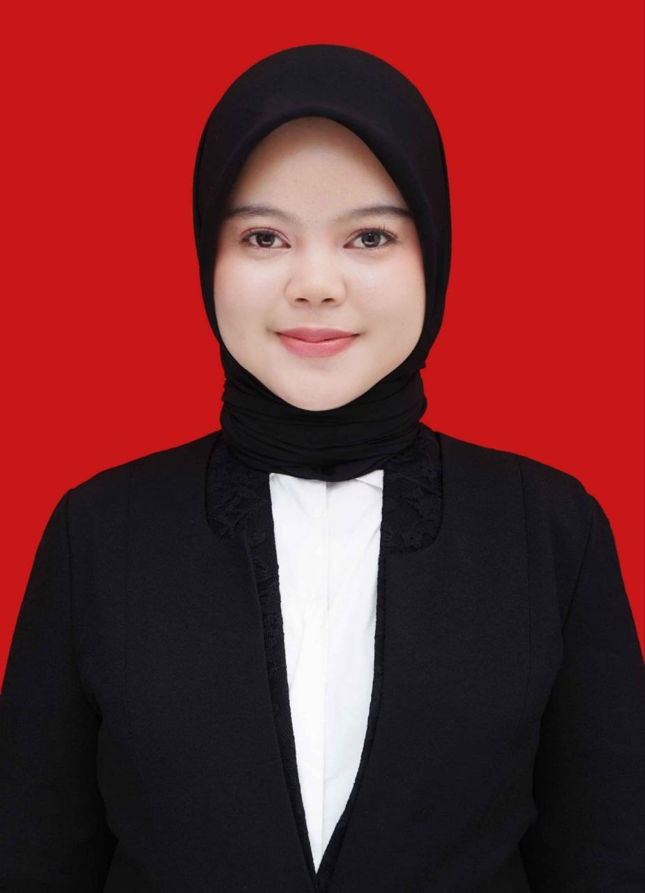
IPK
3.93
/ 4.00
Nia Pratami Sudirman
Administrasi · Perbankan · Kearsipan · Business Support
3.93IPK S1 Manajemen
2Pengalaman kerja & magang
1Jabatan organisasi
9+Keahlian terlatih
01TENTANG SAYA
Latar belakang
yang membentuk cara saya bekerja.
Fresh graduate S1 Manajemen Universitas Muhammadiyah Makassar dengan IPK 3,93. Saya memiliki pengalaman di bidang administrasi, pelayanan, pengarsipan, pendataan, dan operasional perbankan — mulai dari mengelola dokumen, input dan pengecekan data, hingga penggunaan sistem internal bank.
Sebagai Petugas Lapangan Sensus BPS, saya terbiasa melakukan pendataan dan wawancara langsung dengan pelaku usaha dari berbagai karakter.
Saya tertarik mengembangkan karier di bidang administrasi, perbankan, kearsipan, pelayanan, dan business support.
Mengelola dan mengarsipkan dokumen agar mudah ditemukan kembali.
Melayani nasabah serta responden dengan ramah dan profesional.
02PENGALAMAN
Pengalaman kerja
dan magang.
Setiap pengalaman saya sertakan dokumentasi aslinya — dari magang di bank, kegiatan sensus lapangan, sampai amanah sebagai bendahara organisasi.
INTERNSHIP
Juli — September 2025
Administrasi, Operasional & Pelayanan
Bank Rakyat Indonesia (BRI)
Selama magang di Bank Rakyat Indonesia (BRI), saya fokus pada administrasi, operasional, dan pelayanan nasabah, mulai dari mempersiapkan dokumen, input dan pengecekan data, pengelolaan dokumen melalui sistem administrasi perbankan, hingga mendukung kebutuhan operasional dan pelayanan di kantor.
- Melayani nasabah secara ramah dan profesional.
- Menginput dan memeriksa data secara teliti.
- Mengelola dokumen melalui sistem administrasi perbankan secara sistematis.
- Mengarsipkan dokumen agar rapi dan mudah ditemukan.
- Mendukung administrasi untuk kelancaran operasional.
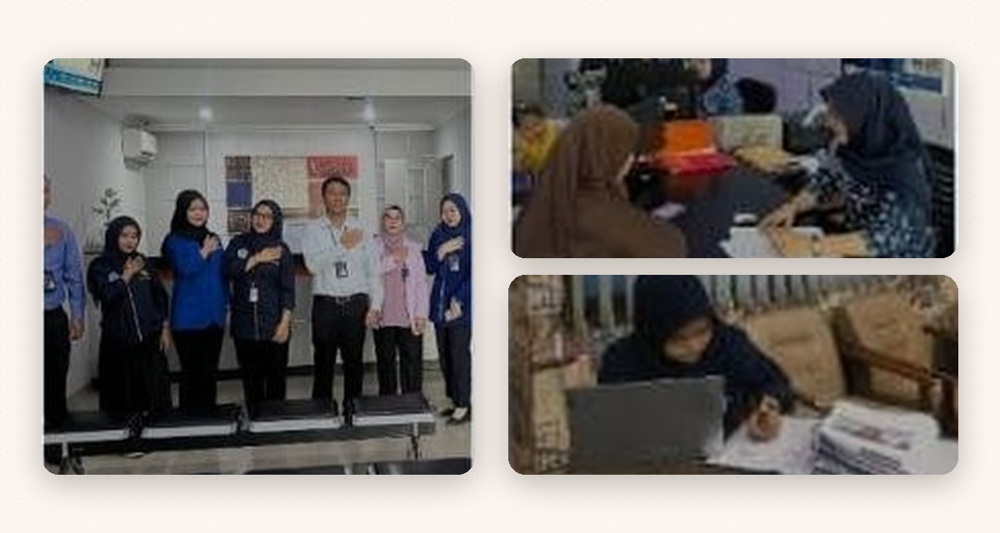
CONTRACT
Juni — Agustus 2026
Petugas Lapangan Sensus
Badan Pusat Statistik (BPS)
Bertugas melakukan pendataan dan wawancara langsung dengan pelaku usaha, mengumpulkan serta memeriksa data, dan membantu memastikan kelengkapan data selama kegiatan sensus.
- Mengumpulkan data responden secara lengkap dan akurat.
- Memeriksa data untuk memastikan kelengkapan dan kesesuaian informasi.
- Membangun komunikasi efektif dengan berbagai karakter responden.
- Mengelola hasil pendataan secara rapi dan sistematis.
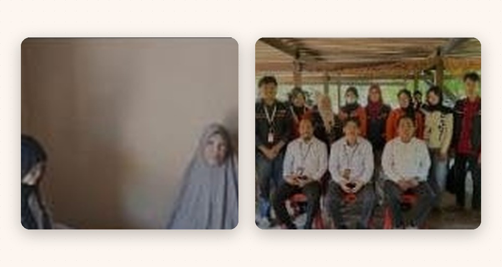
ORGANISASI
2024 — 2025
Bendahara : KPM-PM Cab. Polewali
Kesatuan Pelajar Mahasiswa Polewali Mandar
- Mengelola pemasukan dan pengeluaran organisasi.
- Mencatat dan membuat laporan keuangan kegiatan.
- Mengatur kebutuhan dana untuk kegiatan organisasi.
- Mengelola administrasi dan bukti transaksi keuangan.
- Berkoordinasi dengan pengurus terkait penggunaan dana.
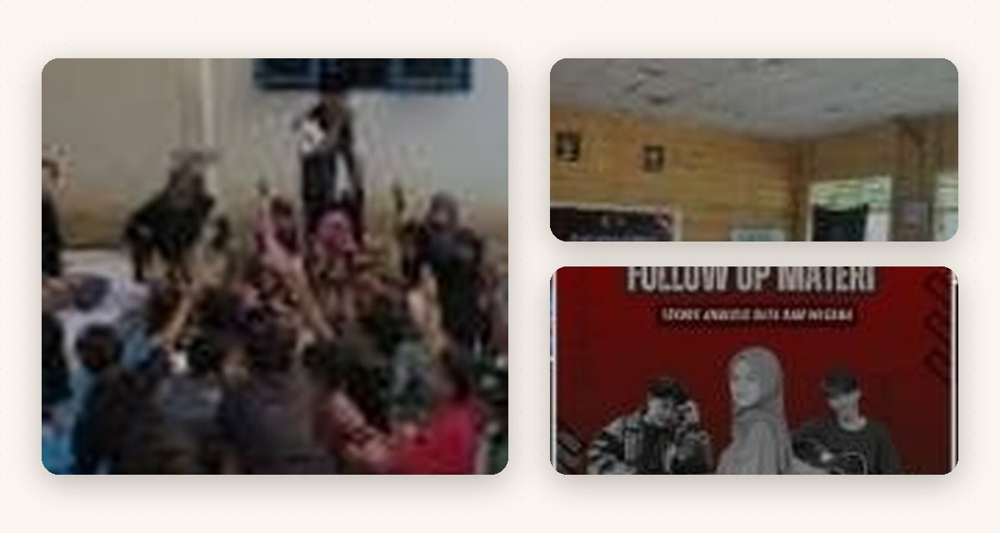
03PENDIDIKAN
Pendidikan
formal.
2022 — 2026
Universitas Muhammadiyah Makassar
S1 Manajemen · Fakultas Ekonomi dan Bisnis
IPK AKHIR
3.93
dari 4.00
04KEAHLIAN
Keahlian
yang saya kuasai.
Soft Skill
- Layanan Pelanggan
- Tanggung Jawab
- Adaptasi
- Manajemen Waktu
- Disiplin
- Kerja Sama Tim
Hard Skill
- Manajemen & Operasional
- Manajemen Akun
- Pemasaran Digital
- Pengarsipan Dokumen
- Input & Verifikasi Data
Software
05DOKUMENTASI
Dokumentasi
kegiatan & pengalaman.
Sebagian momen dari pengalaman kerja, magang, kegiatan sosial, dan aktivitas organisasi yang saya jalani.
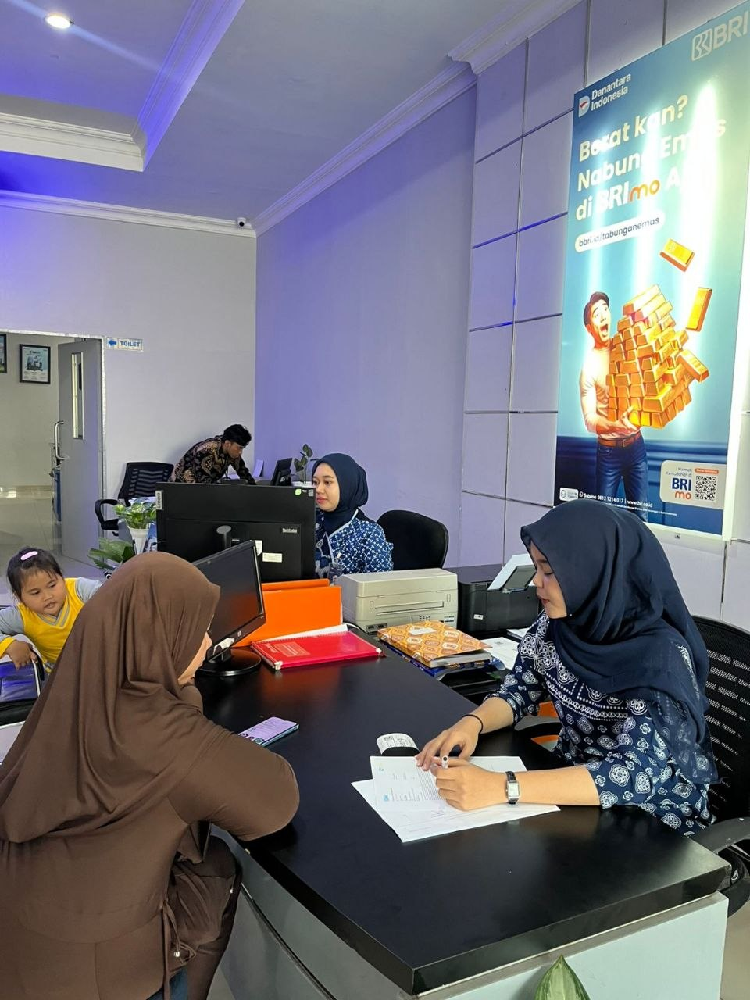
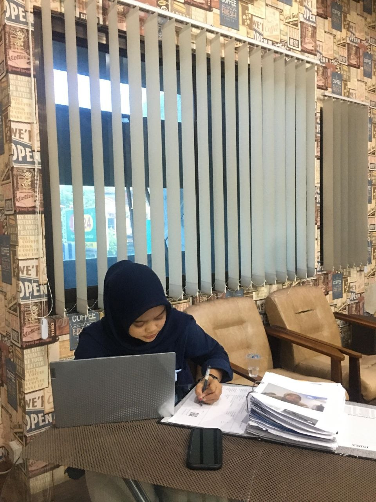
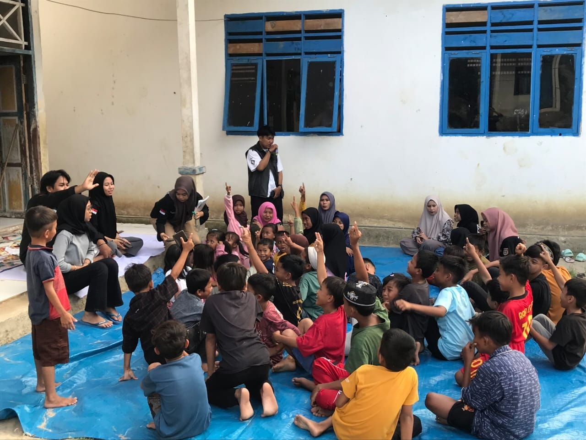
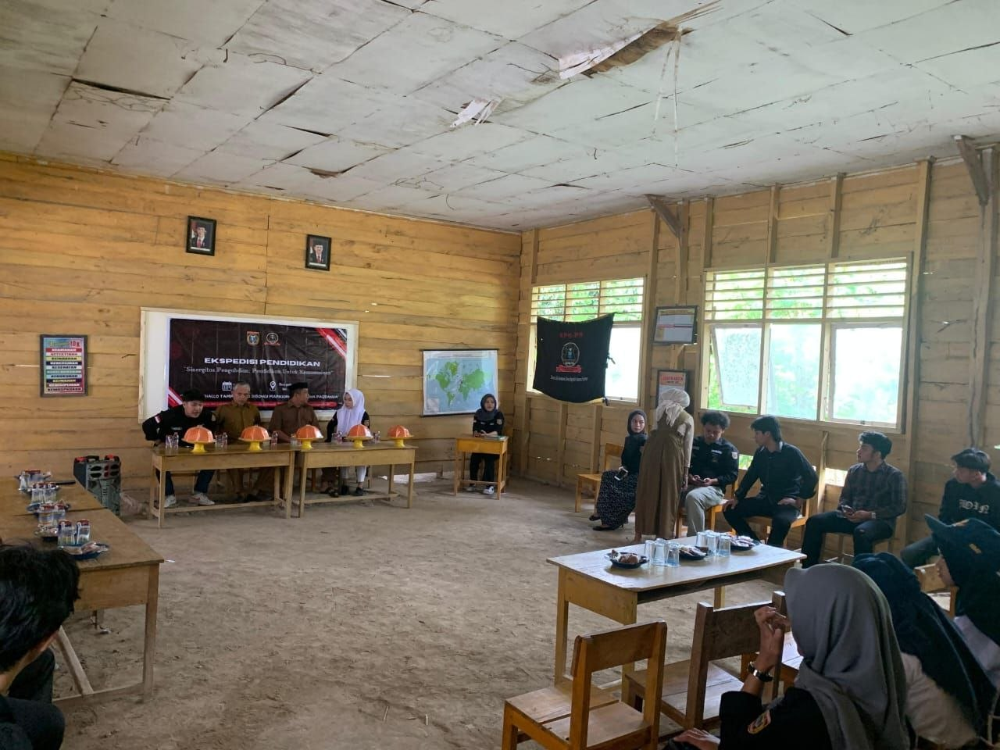
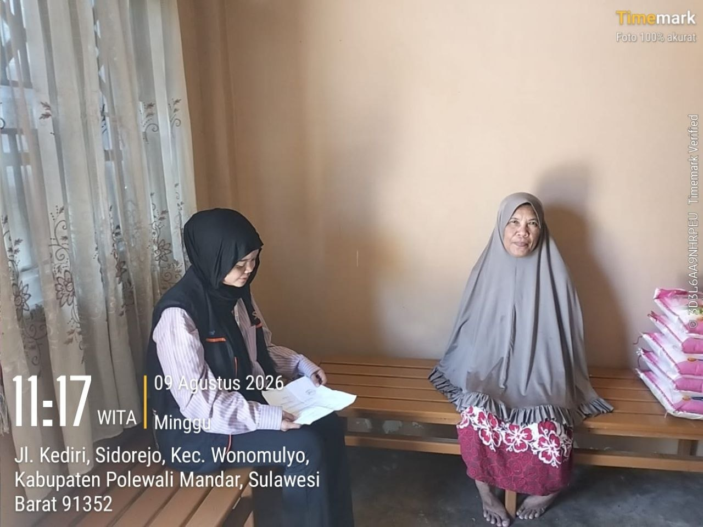
06SERTIFIKAT
Pelatihan & sertifikat
pendukung.
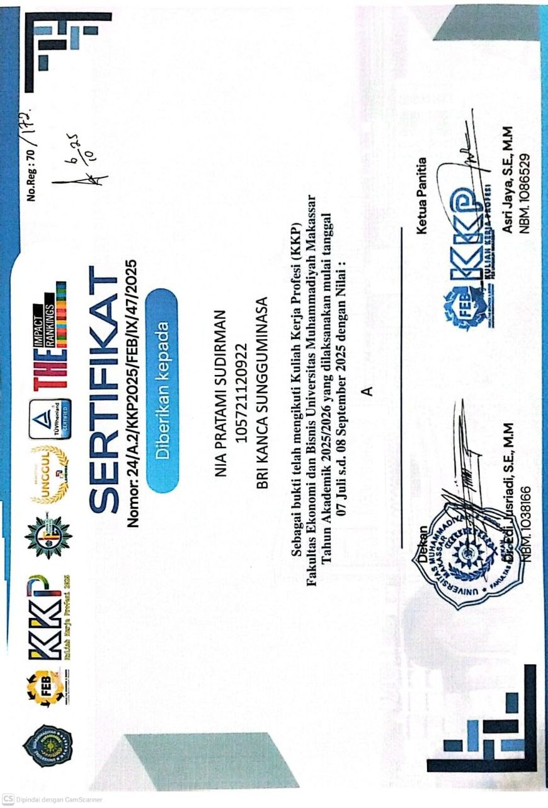
SERTIFIKAT KKP
Kuliah Kerja Profesi (KKP)
Fakultas Ekonomi dan Bisnis, Universitas Muhammadiyah Makassar · BRI Kanca Sungguminasa
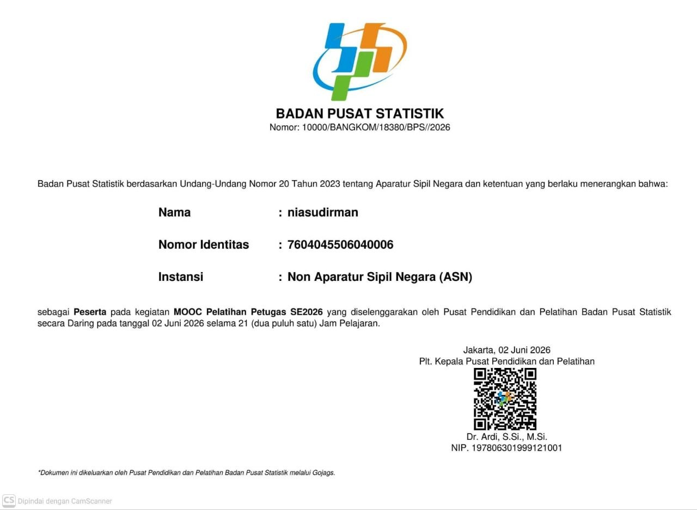
BPS · MOOC
Pelatihan Petugas SE2026
Badan Pusat Statistik — pelatihan daring 21 jam pembelajaran.
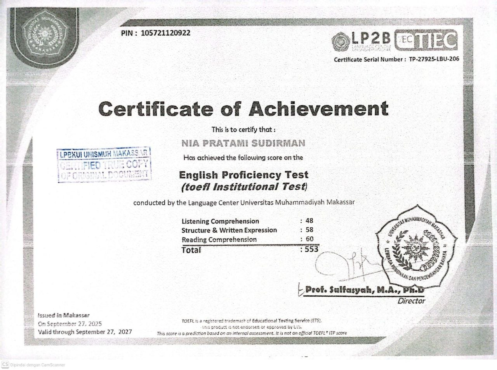
TOEFL · 553
English Proficiency Test
Language Center, Universitas Muhammadiyah Makassar — total skor 553.
LISTENING48
STRUCTURE58
READING60
TERBUKA UNTUK PELUANG KERJA
Mari bekerja
bersama.
Saya siap berkontribusi di bidang administrasi, perbankan, kearsipan, pelayanan, dan business support. Saya pribadi yang teliti, bertanggung jawab, mudah beradaptasi, dan senang mempelajari hal baru. Saya siap belajar, berkembang, dan memberikan kontribusi positif di lingkungan kerja.